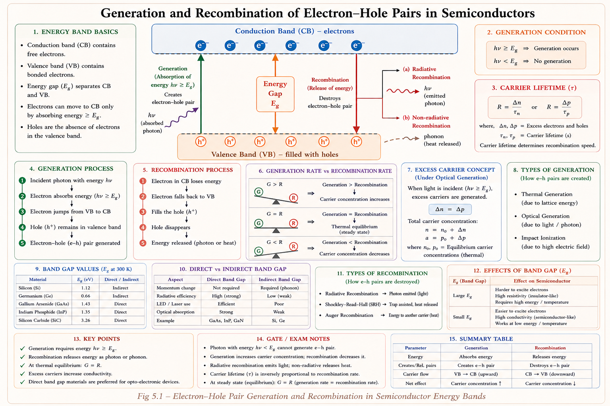
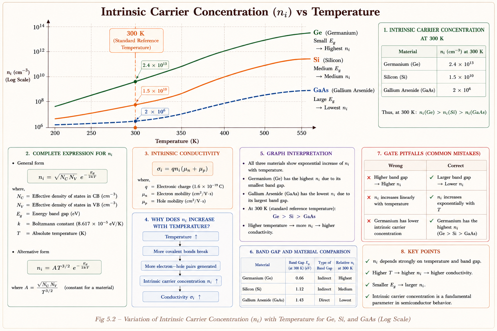
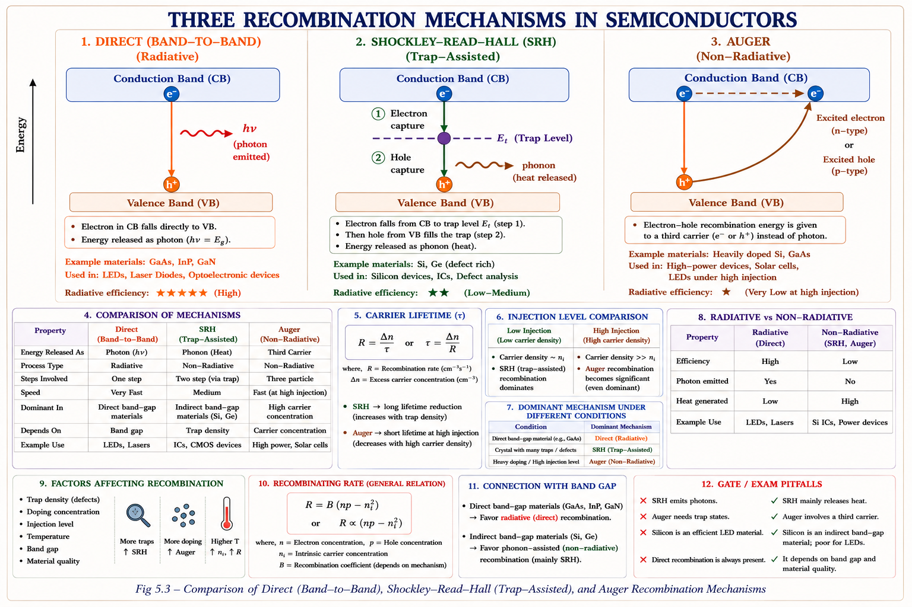
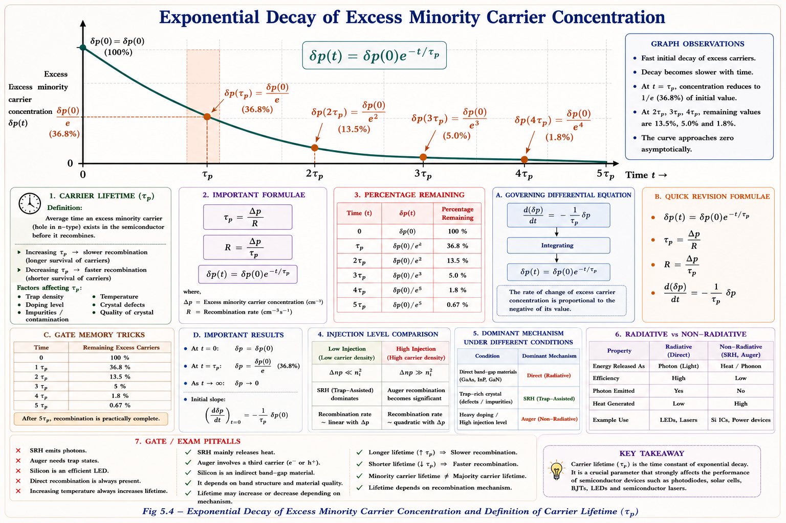
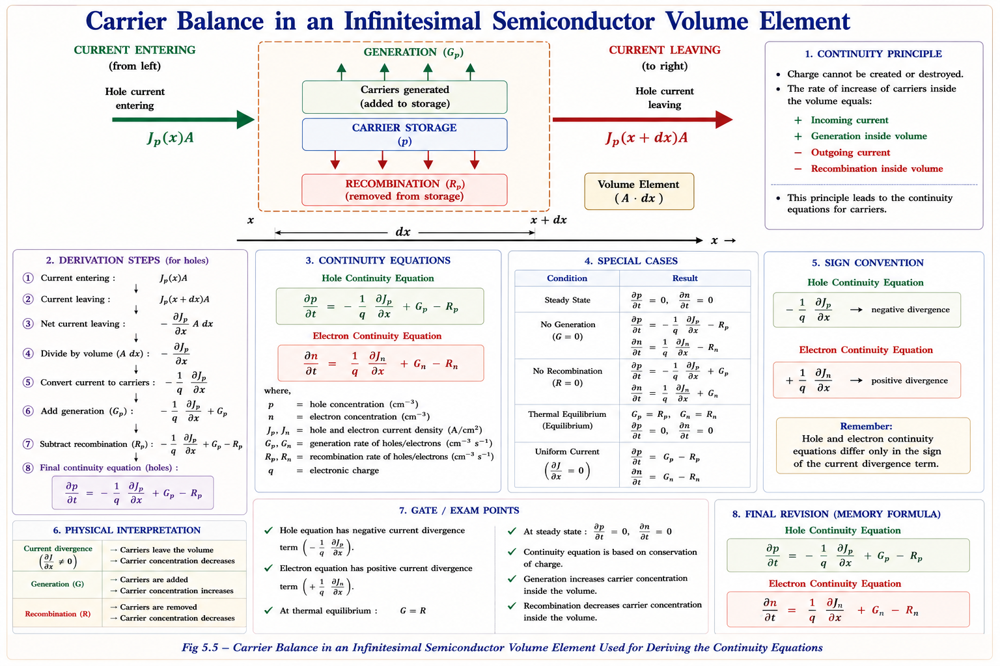
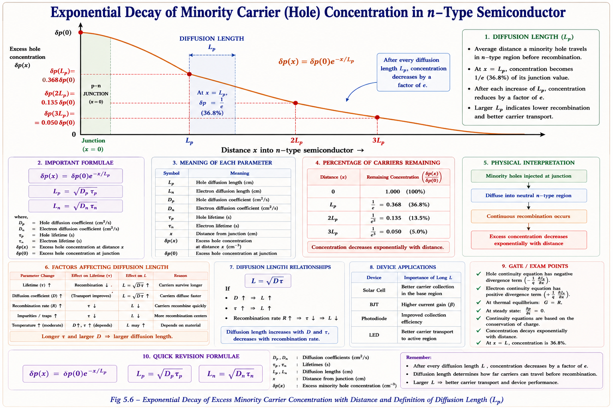
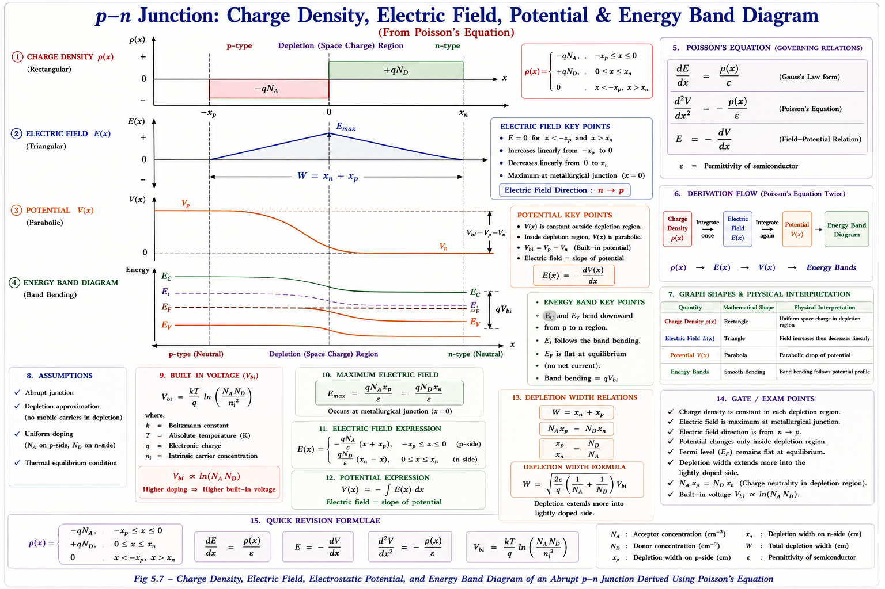

A complete GATE/IES treatment of how electron-hole pairs are created and destroyed in semiconductors, carrier lifetime, and the fundamental transport equations governing current flow — built from Streetman, Neamen, Pierret, and Sze.
Every semiconductor device — diode, BJT, MOSFET, solar cell — ultimately depends on the balance between how many carriers are being created (generation) and how many are being destroyed (recombination). Understanding this balance is the key to predicting device behaviour under any condition.
Imagine you are standing near a busy intersection on a rainy day. Cars (electrons) and taxis (holes) are constantly appearing from parking lots and disappearing into garages. At steady traffic (thermal equilibrium), the rate of cars leaving parking lots exactly equals the rate they enter garages. Now if a movie ends nearby, a sudden surge of pedestrians changes everything — just as injecting light or current into a semiconductor suddenly creates extra electron-hole pairs.
This analogy captures the essence of generation (creation of electron-hole pairs) and recombination (annihilation of electron-hole pairs). These processes govern:[1]

At any non-zero temperature, semiconductor atoms vibrate. Occasionally a covalent bond breaks due to sufficient thermal energy, releasing a free electron into the conduction band and leaving behind a vacancy (hole) in the valence band. This is thermal generation.[1]
At the same time, free electrons wander through the crystal and may fall back into a vacant bond — this is recombination. At thermal equilibrium, these two rates exactly balance. The result is a fixed concentration of carriers at a given temperature called the intrinsic carrier concentration \(n_i\).
At thermal equilibrium: \(G_{th} = R_{th}\) and \(np = n_i^2\). This is the mass action law — the product of electron and hole concentrations always equals \(n_i^2\) at a given temperature, regardless of doping.
The intrinsic carrier concentration is given by:[2]
where \(N_c\) and \(N_v\) are the effective density of states in the conduction and valence bands, \(E_g\) is the bandgap energy, \(k_B\) is Boltzmann's constant, and \(T\) is absolute temperature.
| Semiconductor | E_g (eV) at 300 K | n_i at 300 K (cm⁻³) | Application |
|---|---|---|---|
| Silicon (Si) | 1.12 | ~1.5 × 10¹⁰ | ICs, MOSFETs, solar cells |
| Germanium (Ge) | 0.67 | ~2.4 × 10¹³ | Early transistors, IR detectors |
| GaAs | 1.42 | ~2 × 10⁶ | High-speed, optoelectronics |
| InP | 1.35 | ~1.3 × 10⁷ | Laser diodes, HBTs |
\(n_i\) depends exponentially on temperature through \(\exp(-E_g/2k_BT)\). Doubling temperature does NOT double \(n_i\) — it increases \(n_i\) by many orders of magnitude. For Si: \(n_i \approx 1.5\times10^{10}\) cm⁻³ at 300 K but ~\(10^{13}\) cm⁻³ at 450 K.

When excess carriers are present (more electrons and holes than the equilibrium value), recombination occurs by several distinct physical mechanisms. Each mechanism has different characteristics and dominates in different materials and device conditions.[2]

An electron in the conduction band falls directly into an empty state (hole) in the valence band. The energy released as a photon equals approximately \(E_g\). This is highly efficient in direct bandgap materials (GaAs, InP) where momentum is automatically conserved. In indirect bandgap materials like Si, momentum mismatch requires phonon involvement, making direct recombination very unlikely.[1]
where \(B\) is the radiative recombination coefficient (\(\approx 10^{-10}\) cm³/s for GaAs; \(\approx 10^{-15}\) cm³/s for Si — showing Si is extremely poor at direct recombination).
This is the dominant recombination mechanism in silicon and other indirect bandgap semiconductors. Impurities, crystal defects, or interface states create energy levels within the forbidden gap — called trap states or recombination centres. An electron first falls from the conduction band to the trap, then from the trap to the valence band (or equivalently, the trap captures a hole). This two-step process avoids the momentum mismatch problem.[2]
$$U_{SRH} = \frac{np - n_i^2}{\tau_p(n + n_1) + \tau_n(p + p_1)}$$
where \(n_1 = n_i\exp\!\bigl(\tfrac{E_t - E_i}{k_BT}\bigr)\), \(p_1 = n_i\exp\!\bigl(\tfrac{E_i - E_t}{k_BT}\bigr)\), \(\tau_n = 1/(v_{th}\sigma_n N_t)\), \(\tau_p = 1/(v_{th}\sigma_p N_t)\)
SRH recombination is maximum when the trap level \(E_t\) is at the intrinsic Fermi level \(E_i\) (mid-gap). At this condition \(n_1 = p_1 = n_i\) and the denominator is minimised. This is why mid-gap impurities (like gold in silicon) are most effective lifetime killers — used intentionally in fast switching devices!
In Auger recombination, the energy released by an electron-hole recombination event is transferred to a third carrier (another electron or hole) rather than emitted as a photon. This third carrier then loses energy through multiple phonon collisions (thermalises). Auger recombination rate goes as \(n^2p\) or \(np^2\), so it becomes significant only at very high carrier concentrations — in heavily doped regions or under intense illumination.[3]
where \(C_n \approx C_p \approx 10^{-31}\) cm⁶/s for silicon. For intrinsic/lightly doped Si, this is negligible compared to SRH, but becomes dominant at \(n > 10^{18}\) cm⁻³.
| Mechanism | Rate Dependence | Dominant When | Material/Device |
|---|---|---|---|
| Direct (Band-to-Band) | R ∝ np | Direct bandgap material | GaAs LEDs, Lasers, Detectors |
| SRH (Trap-Assisted) | R ∝ (np−nᵢ²)/denom | Low-level injection, Si, Ge | Si diodes, BJTs, solar cells |
| Auger | R ∝ n²p or np² | High carrier density n > 10¹⁸ | Heavily doped Si, HBTs |
| Surface Recombination | R ∝ surface states | Near semiconductor surface | MOSFETs gate oxide interface |
When light shines on a semiconductor or current is injected, extra electron-hole pairs are created beyond the equilibrium values. These are called excess carriers:[1]
where \(n_0, p_0\) are the equilibrium concentrations. Because carriers are always created in pairs: \(\delta n = \delta p\).
Low-level injection: \(\delta n = \delta p \ll\) majority carrier concentration.
The majority carrier concentration is barely disturbed; only minority carriers change
significantly.
High-level injection: \(\delta n = \delta p \gg\) majority
carrier concentration. Both carrier concentrations change significantly. This occurs near
junction edges under forward bias.
Under low-level injection with SRH recombination, the rate of excess carrier decay follows a simple first-order equation:[2]
This gives the exponential decay solution:
The minority carrier lifetime \(\tau_p\) (for holes in n-type) is:[2]
where \(v_{th} \approx 10^7\) cm/s is the thermal velocity, \(\sigma_p\) is the capture cross-section, and \(N_t\) is trap density.

The diffusion length is the average distance a minority carrier can travel before recombining. It is a critical parameter for BJTs and solar cells:[1]
Typical values for Si at 300 K: \(D_p \approx 12\) cm²/s, \(\tau_p \approx 1\) µs → \(L_p = \sqrt{12 \times 10^{-6}} \approx 35\) µm. A BJT base width must be \(W_B \ll L_n\) for high gain \(\beta\).
Imagine a river. The number of fish (carriers) in a stretch changes because: fish swim in from upstream (flux in), fish swim out downstream (flux out), fish are born naturally (generation), and fish die (recombination). The continuity equation is simply conservation of carriers applied to a tiny volume element.
Consider a thin slab of semiconductor of thickness \(dx\) and cross-sectional area \(A\). In a small time \(dt\), the change in hole concentration is:[2]

Applying conservation of carriers to the slab: $$ \frac{\partial p}{\partial t} \cdot A\,dx = \left[J_p(x) - J_p(x+dx)\right]\frac{A}{q} + G_p\,A\,dx - R_p\,A\,dx $$
Dividing by \(A\,dx\) and taking the limit \(dx \to 0\):
The sign difference is crucial: holes have \(-\partial J_p/\partial x\) while electrons have \(+\partial J_n/\partial x\). This arises because electron current \(J_n\) flows opposite to electron flux. Mixing up these signs is one of the most common GATE mistakes.
The current density consists of drift and diffusion components:[3]
Under the important special case of: (1) low-level injection, (2) no electric field (\(\mathcal{E} = 0\)), (3) uniform generation, the continuity equation for minority carriers simplifies dramatically:[2]
At steady state (\(\partial/\partial t = 0\)) with no generation (\(G_p = 0\)):
General solution: \(\delta p(x) = A\,e^{x/L_p} + B\,e^{-x/L_p}\). For a semi-infinite n-type semiconductor with injection at \(x = 0\):

Poisson's equation connects the electric potential \(\phi\) to the charge density \(\rho\) in a material. In a semiconductor, charges arise from free electrons, free holes, ionised donor atoms, and ionised acceptor atoms.[3]
Since \(\mathcal{E} = -d\phi/dx\):
where \(\varepsilon_s = \varepsilon_0\,\varepsilon_r\) is the permittivity of the semiconductor (\(\varepsilon_r \approx 11.7\) for Si, \(\varepsilon_r \approx 12.9\) for GaAs), \(N_D^+\) is ionised donor density, and \(N_A^-\) is ionised acceptor density.
At room temperature, essentially all dopants are ionised: \(N_D^+ \approx N_D\) and \(N_A^-
\approx N_A\). So Poisson's equation becomes:
$$\dfrac{d\mathcal{E}}{dx} = \dfrac{q}{\varepsilon_s}(p - n + N_D - N_A)$$
In the depletion region of a p-n junction, using the depletion approximation (all mobile carriers swept out: \(p \approx 0, n \approx 0\)):

where \(V_T = k_BT/q \approx 26\) mV at 300 K is the thermal voltage. A higher doping or wider bandgap semiconductor → larger \(V_{bi}\).
In an n-type silicon sample at room temperature, the minority carrier hole lifetime is \(\tau_p = 10\) µs and the hole diffusion coefficient is \(D_p = 12\) cm²/s. What is the minority carrier diffusion length \(L_p\)?
Solution: \(L_p = \sqrt{D_p\tau_p} = \sqrt{12 \times 10^{-5}} = \sqrt{1.2\times10^{-4}} \approx 34.64 \times 10^{-4}\) cm \(= 34.64\) µm.
⚡ Key: Always convert \(\tau_p\) to seconds before substituting. \(10\) µs \(= 10\times10^{-6}\) s. Units: cm²/s × s = cm² → √ → cm → convert to µm.
For a p-type semiconductor sample illuminated with light causing uniform generation \(G_L\) at steady state, with no electric field and minority carriers having lifetime \(\tau_n\), what is the excess electron concentration \(\delta n\)?
Solution: Continuity equation at steady state, no field, uniform generation: \(0 = G_n - \delta n/\tau_n \Rightarrow \delta n = G_L\,\tau_n\). The diffusion term \(D_n\,\partial^2(\delta n)/\partial x^2 = 0\) because generation is uniform (no spatial gradient).
In Shockley-Read-Hall recombination theory, for which trap energy level \(E_t\) within the bandgap is the recombination rate maximum?
Solution: In the SRH rate formula, the denominator \(\tau_p(n+n_1) + \tau_n(p+p_1)\) is minimised when \(E_t = E_i\), since \(n_1 = p_1 = n_i\) at mid-gap. This minimises the denominator and maximises \(U_{SRH}\). Gold doped Si places traps near mid-gap — used in fast-switching diodes to reduce \(\tau\) intentionally.
An abrupt Si p-n junction has \(N_A = 10^{17}\) cm⁻³ on the p-side and \(N_D = 10^{15}\) cm⁻³ on the n-side. At 300 K (\(n_i = 1.5\times10^{10}\) cm⁻³, \(\varepsilon_s = 11.7\varepsilon_0\), \(\varepsilon_0 = 8.85\times10^{-14}\) F/cm). Find \(V_{bi}\).
Solution: \(V_{bi} = 0.026\ln\!\bigl(\tfrac{10^{17}\times10^{15}}{(1.5\times10^{10})^2}\bigr) = 0.026\ln\!\bigl(\tfrac{10^{32}}{2.25\times10^{20}}\bigr) = 0.026\ln(4.44\times10^{11}) = 0.026\times27.82 \approx 0.723\) V. (Approximately 0.717 V using exact \(n_i\).)
(a) Minority carrier lifetime \(\tau_p\):
By definition, \(\delta p\) drops to \(\delta p(0)/e = 0.368\,\delta p(0)\) at \(t =
\tau_p\).
Therefore \(\tau_p = 2\) µs.
(b) Diffusion Length \(L_p\):
(c) Excess holes at \(t = 6\) µs:
\(\delta p(0) = 10^{14} \ll N_D = 10^{16}\) cm⁻³. Yes — low-level injection holds. Majority electron concentration barely changes. If \(\delta p \sim N_D\), we would be in high-level injection.
(a) \(L_p = \sqrt{12\times5\times10^{-6}} = \sqrt{6\times10^{-5}} = 7.75\times10^{-3}\) cm \(= 77.5\) µm
(d) At \(x = 2L_p\): \(\delta p = 5\times10^{13}\cdot e^{-2} = 5\times10^{13}\times0.135 = 6.77\times10^{12}\) cm⁻³
Current density at any point: \(J_p(x) = J_p(0)\,e^{-x/L_p}\) since \(J_p \propto d(\delta p)/dx \propto \delta p\). This means current also decays with the same \(L_p\) — useful for quick GATE MCQ.
Almost all depletion is on the lightly doped n-side — a key result for p⁺-n junctions and solar cells!
\(\tau\) is a time (\(\mu\)s range for Si); \(L = \sqrt{D\tau}\) is a length (\(\mu\)m range). They are related but dimensionally different. GATE sometimes states one and asks for the other. Always check units.
Electrons: \(\partial n/\partial t = +\tfrac{1}{q}\partial J_n/\partial x + G - R\). Holes: \(\partial p/\partial t = -\tfrac{1}{q}\partial J_p/\partial x + G - R\). The \(+/-\) sign difference between electrons and holes is the #1 sign error in GATE numerical solutions.
The simple \(\delta p\) decay \(e^{-t/\tau_p}\) only holds under low-level injection (\(\delta p \ll N_D\)). If the problem states \(\delta p \sim N_D\), you must use ambipolar transport equations. Many students blindly apply \(L_p = \sqrt{D_p\tau_p}\) even in high-injection scenarios — this is wrong.
Silicon is an indirect bandgap semiconductor. Direct band-to-band recombination is negligible. SRH recombination through mid-gap traps dominates. Do NOT use \(R = Bnp\) for Si — this applies to GaAs. A common IES MCQ trap.
In depletion region calculations using Poisson's equation, always apply the depletion approximation (\(p \approx 0\), \(n \approx 0\)). If a problem mentions "exact solution," watch for partial depletion, but 99% of GATE questions use the depletion approximation.
SRH = "Slow R Here" (dominant in Si, indirect band) | Direct = "Direct light emission" (GaAs, LED, LASER) | Auger = "Augments at high current density" | \(L = \sqrt{D\tau}\) — "the Length = root of the Duo"
Have a question about carrier generation, SRH recombination, continuity equation, or Poisson's equation? Ask Aarova AI — your GATE/IES tutor.
\(n_i = \sqrt{N_cN_v}\exp(-E_g/2k_BT)\). At equilibrium: \(G_{th} = R_{th}\) and \(np = n_i^2\). \(n_i\) increases exponentially with T. Si: 1.5×10¹⁰ cm⁻³ at 300 K.
Dominant in Si (indirect gap). Two-step via trap states. Maximum rate at \(E_t = E_i\) (mid-gap). \(\tau_p = 1/(v_{th}\sigma_pN_t)\). Gold in Si → reduces lifetime for fast switching.
\(\delta p(t) = \delta p(0)e^{-t/\tau_p}\). \(L_p = \sqrt{D_p\tau_p}\). At \(x = L_p\): concentration = 1/e of boundary value. Critical for diode and BJT design.
\(\partial p/\partial t = -(1/q)\partial J_p/\partial x + G - R\). At steady state, no field: \(D_p\partial^2(\delta p)/\partial x^2 - \delta p/\tau_p + G = 0\). Uniform G: \(\delta p = G\tau_p\).
\(d\mathcal{E}/dx = q(p-n+N_D-N_A)/\varepsilon_s\). In depletion: ρ rectangular → E triangular → φ parabolic. \(V_{bi} = V_T\ln(N_AN_D/n_i^2)\). \(W \propto \sqrt{V_{bi}-V_A}\).
\(L = \sqrt{D\tau}\) | \(\delta n = G\tau_n\) (uniform, SS) | \(V_{bi} = 26\text{ mV}\cdot\ln(N_AN_D/n_i^2)\) | \(W \propto 1/\sqrt{N_{light}}\) | \(|\mathcal{E}_{max}| = 2V_{bi}/W\)
p-n Junction Diode — I-V characteristics, ideal diode equation derivation using minority carrier profiles, depletion capacitance, diffusion capacitance, diode switching time, Zener and avalanche breakdown, and tunnel diode basics. All with GATE EE/EC and IES previous year questions.
| Topic | Formula | GATE Probability | Watch Out For |
|---|---|---|---|
| Intrinsic \(n_i\) | \(n_i = \sqrt{N_cN_v}\,e^{-E_g/2k_BT}\) | 🟢 HIGH | Exponential T dependence — NOT linear |
| Mass Action Law | \(np = n_i^2\) at equilibrium | 🟢 HIGH | Holds even in doped semiconductors |
| Minority Carrier Decay | \(\delta p(t) = \delta p(0)e^{-t/\tau_p}\) | 🟢 HIGH | Only valid for low-level injection |
| Diffusion Length | \(L_p = \sqrt{D_p\tau_p}\) | 🟢 HIGH | Units: \(\sqrt{\text{cm}^2/s \cdot s}\) = cm |
| Uniform Illumination | \(\delta n = G_L\tau_n\) (steady state) | 🟢 HIGH | No diffusion term when G is uniform |
| SRH — Max Rate | At \(E_t = E_i\) (mid-gap) | 🟡 MEDIUM | Gold intentionally used in Si for fast devices |
| Built-in Potential | \(V_{bi} = V_T\ln(N_AN_D/n_i^2)\) | 🟢 HIGH | Increases with doping; decreases with T |
| Depletion Width | \(W \propto \sqrt{V_{bi} - V_A}\) | 🟢 HIGH | W decreases with forward bias \(V_A > 0\) |
| Max E-field | \(|\mathcal{E}_{max}| = 2(V_{bi}-V_A)/W\) | 🟡 MEDIUM | At \(x = 0\) (junction); varies linearly away |
| Auger | \(R \propto n^2p + np^2\) | 🔴 LOW | Significant only at \(n > 10^{18}\) cm⁻³ |
All technical content derived from the following standard textbooks. All explanations, derivations, diagrams and examples are original to Aarova AI.